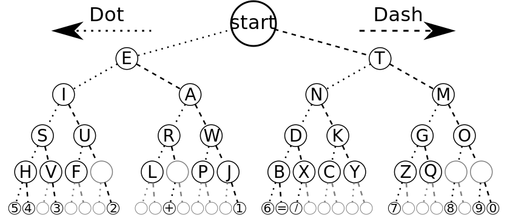

The Basics
If you've watched parasite, you may remember Morse Code play a key part in the film's progression.
If you were left wondering "Have I missed any morse codes around me?" after watching the film, you've come to the right place.
The most basic way of describing morse code would that it uses combinations of dots(•) and dashes(▬) to represent letters and numbers, it can also be represented using Lights or clicks and can be understood by a skilled listener without any special equipment, while to the uneducated it won't be more than whitenoise or flashes of light.
The Most basic for this is called 'Internation Morse Code' which is what I have learnt and have described in this page.
International Morse Code
Internation Morse encodes the 26 latin letters (A through Z), The arabic numerals.
A few Things to keep in mind:
- The length of a dot is one unit.
- A dash is three units.
- The space between parts of the same letter is one unit.
- The space between letters is three units.
- The space between words is seven units.
Memorizing the code
The Chart below is a nice way of memorizing the morse code:
The best way I could find to memorize the alphabets in this order is this YouTube video.
Click here to download the tree
{kind=link}
Morse codes for alphabets
Givem Below are the morse codes for a through z, click on them to hear what they sound like.| A = • ▬ |
N = ▬ • |
| B = ▬ • • • |
O = ▬ ▬ ▬ |
| C = ▬ • ▬ • |
P = • ▬ ▬ • |
| D = ▬ • • | Q = ▬ ▬ • ▬ |
| E = • | R = • ▬ • |
| F = • • ▬ • | S = • • • |
| G = ▬ ▬ • | T = ▬ |
| H = • • • • | U = • • ▬ |
| I = • • | V = • • • ▬ |
| J = • ▬ ▬ ▬ | W = • ▬ ▬ |
| K = ▬ • ▬ | X = ▬ • • ▬ |
| L = • ▬ • • | Y = ▬ • ▬ ▬ |
| M = ▬ ▬ | Z = ▬ ▬ • • |
Try not to memorize the dots and dashes as you see them first, Keeping in mind what they sound like would be a better approach to learning morse.
That would help you easily identify any morse code you hear quickly instead of fumbling for a pen and paper to write it down and then decode it.
The best way I found to build up the skill to be able to memorize morse was to ask someone else to encode a random message and listen to it till I could decode it, doing that helped me build up the habit of listening to morse and not forget it after a few days.
Credits & Other resources
The content on this website was written by me, while I myself was trying to learn morse.
The morse code sounds are used from the wikipedia page for morse code.
A cool website I found which lets you generate morse code for any text input.